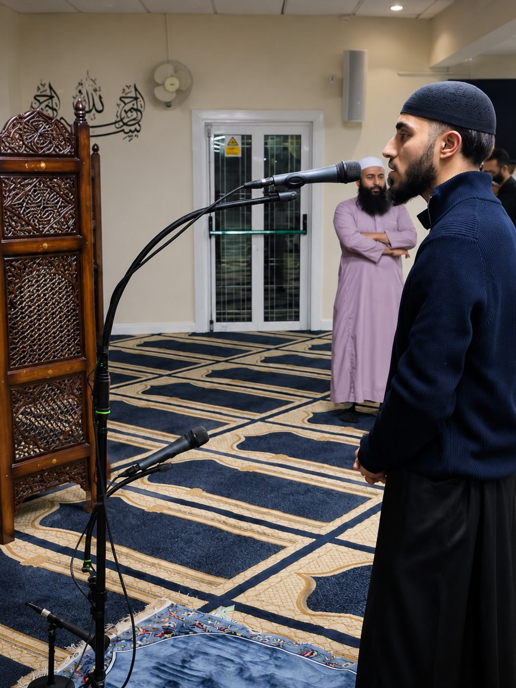
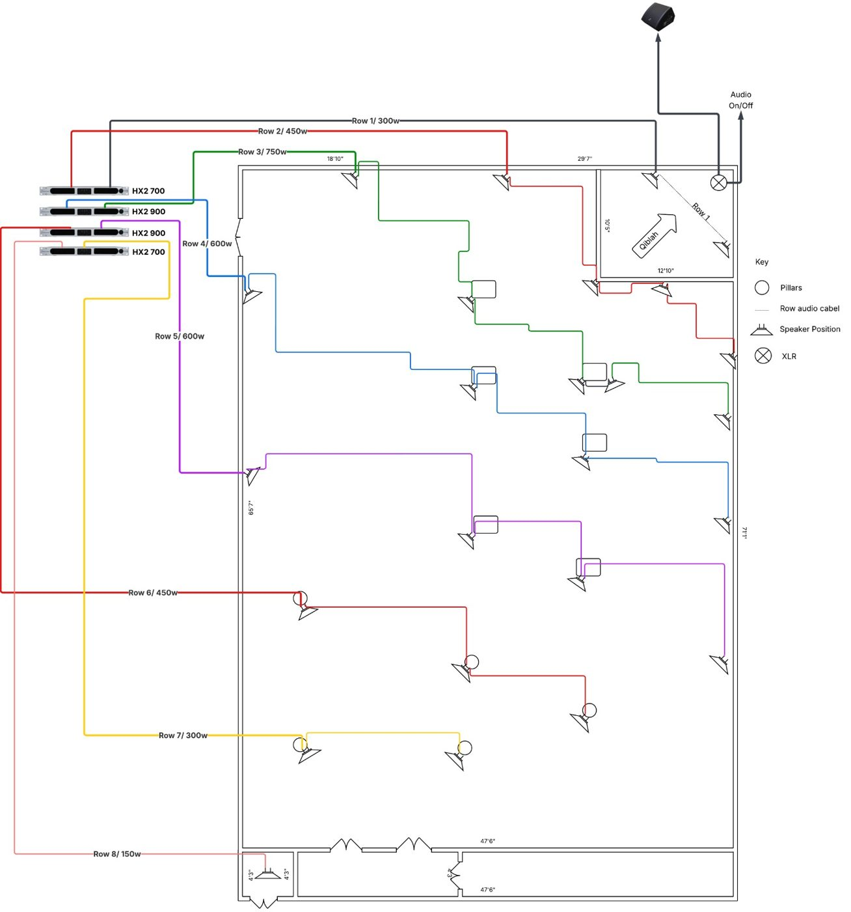
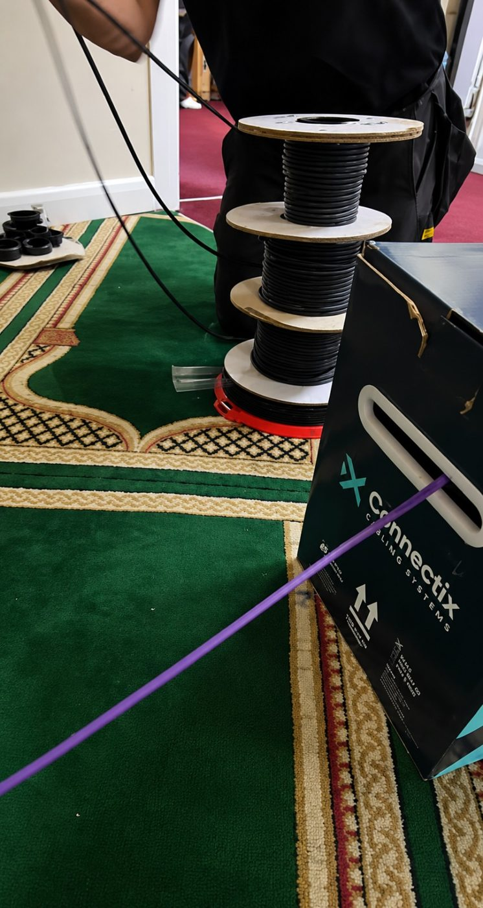
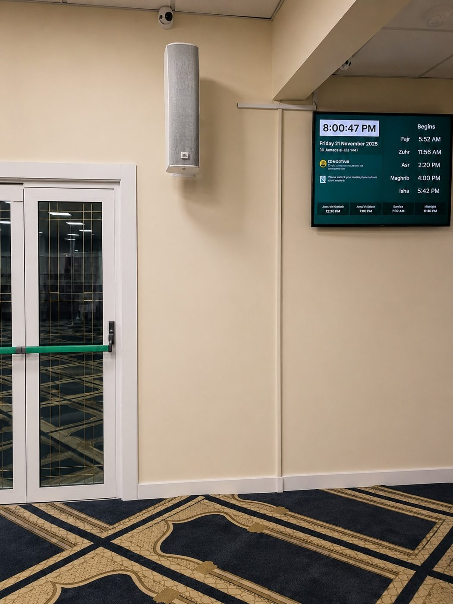
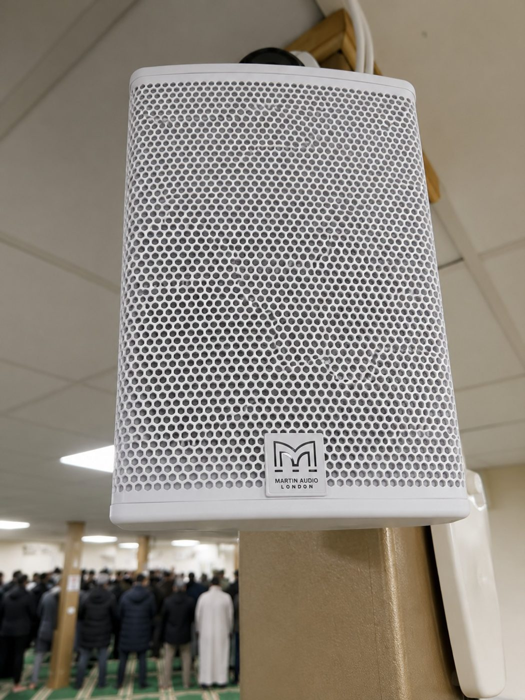

Sisters’ prayer area
Receives live audio from the main hall, can mute it independently, runs its own local microphones and works without affecting any other area.
A full digital redesign replacing a 15-year-old analogue system: about 3km of new cabling, JBL and Martin Audio loudspeakers, independent control of every prayer area and our Haramain sound settings.

Edmonton Islamic Centre has served North London for many years, with daily prayers, Jumu’ah, Ramadan programmes, Islamic education and community activities for hundreds of worshippers.
Its sound system had been running for almost 15 years. As the congregation grew, and while the building was being refurbished, the committee made audio a priority: clear Qur’an recitation, an intelligible khutbah and reliable coverage everywhere.
Having seen our installs across the UK, they asked us to design a future-proof, multi-zone system to serve the community for the next 15–20 years.
Every successful install starts with careful planning. We produced a full design: loudspeaker placement, zoning, cable routes and equipment.
About 500 worshippers
150–200 worshippers
About 150 worshippers
Used for Jumu’ah and Ramadan
Used throughout Ramadan

Unlike a traditional system where everything runs as one, each zone can take local audio, the main prayer audio, or run independently.
Receives live audio from the main hall, can mute it independently, runs its own local microphones and works without affecting any other area.
Independent control during Ramadan, so worshippers resting overnight aren’t disturbed while the rest of the mosque keeps full coverage.
Switched on when needed for Jumu’ah, Ramadan and special events, with the same audio quality as the main hall.

Instead of an older 100V line speaker system, we installed a modern low-impedance system for better sound quality, more control and clearer speech. Every cable route, connection point and equipment location was planned for reliability and easy maintenance, giving a foundation built to last 15–20 years.
The speakers give even coverage across every prayer space while keeping speech and recitation natural and clear.


After installation, every loudspeaker zone was calibrated on its own. Rather than treating the mosque as one space, each row and section was optimised.
Even sound pressure from the front row to the back, in every zone.
High intelligibility for the khutbah with feedback kept under control.
A warm, balanced tone for Qur’an recitation, inspired by the sound of the Haramain.
The finished system was tested by mosque management, worshippers and visiting Qaris, who praised its clarity and natural sound.
No more switching equipment on and off at the mains. The whole system can be muted from a single control point, and when there’s no audio the amplifiers go into standby, saving power and extending equipment life.
Tell us about your space or event. We'll come back with next steps and a ballpark price.
WhatsApp an engineerSend photos or a video of your current setup 020 3817 7858Call the office sales@salahsounds.co.ukEmail us plans or drawings Office 6706, 182–184 High Street North, East Ham, London E6 2JA